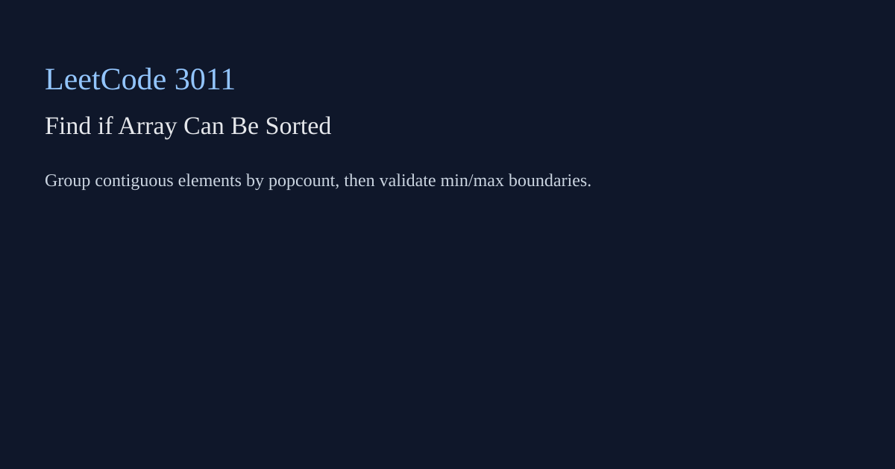

LeetCode 3011: Find if Array Can Be Sorted (Bit Count Groups / Greedy Check)
LeetCode 3011Source: https://leetcode.com/problems/find-if-array-can-be-sorted/

English
Swap is allowed only for elements with equal bit-count. So each contiguous equal-bitcount block can be internally permuted, but elements cannot cross block boundaries. For every block, compute min and max, and check previous blocks' max is not greater than current block min.
class Solution { public boolean canSortArray(int[] nums) { int n=nums.length,prevMax=Integer.MIN_VALUE,i=0; while(i<n){ int bits=Integer.bitCount(nums[i]),mn=nums[i],mx=nums[i],j=i; while(j<n&&Integer.bitCount(nums[j])==bits){ mn=Math.min(mn,nums[j]); mx=Math.max(mx,nums[j]); j++; } if(prevMax>mn) return false; prevMax=Math.max(prevMax,mx); i=j; } return true; }}import "math/bits"
func canSortArray(nums []int) bool { prevMax := -1<<60; for i:=0; i<len(nums); { b:=bits.OnesCount(uint(nums[i])); mn,mx:=nums[i],nums[i]; j:=i; for j<len(nums)&&bits.OnesCount(uint(nums[j]))==b { if nums[j]<mn {mn=nums[j]}; if nums[j]>mx {mx=nums[j]}; j++ }; if prevMax>mn {return false}; if mx>prevMax {prevMax=mx}; i=j }; return true }class Solution { public: bool canSortArray(vector<int>& a) { int n=a.size(), prevMax=INT_MIN; for(int i=0;i<n;){ int b=__builtin_popcount(a[i]), mn=a[i], mx=a[i], j=i; while(j<n && __builtin_popcount(a[j])==b){ mn=min(mn,a[j]); mx=max(mx,a[j]); j++; } if(prevMax>mn) return false; prevMax=max(prevMax,mx); i=j; } return true; } };class Solution:
def canSortArray(self, nums: list[int]) -> bool:
prev_max = -10**18
i = 0
while i < len(nums):
b = nums[i].bit_count(); mn = mx = nums[i]; j = i
while j < len(nums) and nums[j].bit_count() == b:
mn = min(mn, nums[j]); mx = max(mx, nums[j]); j += 1
if prev_max > mn: return False
prev_max = max(prev_max, mx); i = j
return Truefunction canSortArray(nums){const bit=x=>x.toString(2).split('0').join('').length;let prevMax=-Infinity;for(let i=0;i<nums.length;){const b=bit(nums[i]);let mn=nums[i],mx=nums[i],j=i;while(j<nums.length&&bit(nums[j])===b){mn=Math.min(mn,nums[j]);mx=Math.max(mx,nums[j]);j++;}if(prevMax>mn)return false;prevMax=Math.max(prevMax,mx);i=j;}return true;}中文
只有 bitcount 相同的元素才能交换，因此元素只能在“原数组中连续且 bitcount 相同”的分组内重排，不能跨分组移动。按分组统计最小值和最大值，若前面分组最大值大于当前分组最小值，就无法整体非递减。
class Solution { public boolean canSortArray(int[] nums) { int n=nums.length,prevMax=Integer.MIN_VALUE,i=0; while(i<n){ int bits=Integer.bitCount(nums[i]),mn=nums[i],mx=nums[i],j=i; while(j<n&&Integer.bitCount(nums[j])==bits){ mn=Math.min(mn,nums[j]); mx=Math.max(mx,nums[j]); j++; } if(prevMax>mn) return false; prevMax=Math.max(prevMax,mx); i=j; } return true; }}import "math/bits"
func canSortArray(nums []int) bool { prevMax := -1<<60; for i:=0; i<len(nums); { b:=bits.OnesCount(uint(nums[i])); mn,mx:=nums[i],nums[i]; j:=i; for j<len(nums)&&bits.OnesCount(uint(nums[j]))==b { if nums[j]<mn {mn=nums[j]}; if nums[j]>mx {mx=nums[j]}; j++ }; if prevMax>mn {return false}; if mx>prevMax {prevMax=mx}; i=j }; return true }class Solution { public: bool canSortArray(vector<int>& a) { int n=a.size(), prevMax=INT_MIN; for(int i=0;i<n;){ int b=__builtin_popcount(a[i]), mn=a[i], mx=a[i], j=i; while(j<n && __builtin_popcount(a[j])==b){ mn=min(mn,a[j]); mx=max(mx,a[j]); j++; } if(prevMax>mn) return false; prevMax=max(prevMax,mx); i=j; } return true; } };class Solution:
def canSortArray(self, nums: list[int]) -> bool:
prev_max = -10**18
i = 0
while i < len(nums):
b = nums[i].bit_count(); mn = mx = nums[i]; j = i
while j < len(nums) and nums[j].bit_count() == b:
mn = min(mn, nums[j]); mx = max(mx, nums[j]); j += 1
if prev_max > mn: return False
prev_max = max(prev_max, mx); i = j
return Truefunction canSortArray(nums){const bit=x=>x.toString(2).split('0').join('').length;let prevMax=-Infinity;for(let i=0;i<nums.length;){const b=bit(nums[i]);let mn=nums[i],mx=nums[i],j=i;while(j<nums.length&&bit(nums[j])===b){mn=Math.min(mn,nums[j]);mx=Math.max(mx,nums[j]);j++;}if(prevMax>mn)return false;prevMax=Math.max(prevMax,mx);i=j;}return true;}
Comments